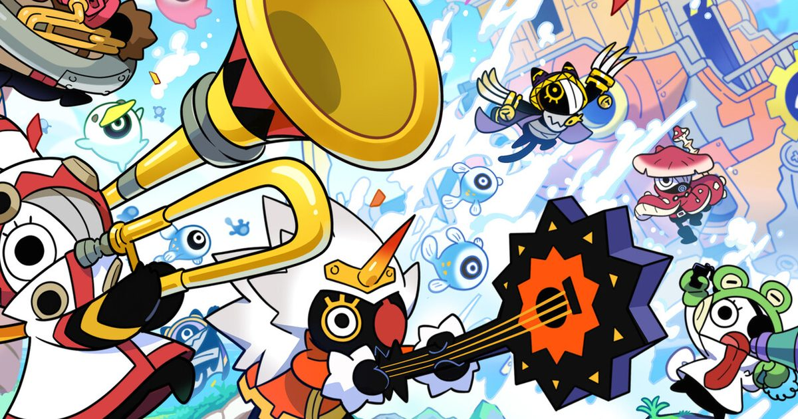

2026-10-15 · 新游深读
《啦嗒铛》(Ratatan) 今天 10 月 15 日结束为期一年的抢先体验，正式 1.0，同步登陆 Switch 2、PS5、Xbox Series X|S 与 Steam。制作人是《啪嗒砰》(Patapon) 的原制作人 Hiroyuki Kotani，作曲是原班 Kemmei Adachi。Steam 好评率 90%。但真正值得聊的既不是"精神续作"这顶帽子，也不是怀旧——是它给一套十九年前的玩法加的唯一一层新东西，以及那层让它显得很现代的肉鸽外壳到底值不值。

横版卷轴。你直接操控的是一只叫「啦嗒铛」的小生物本体，而真正打仗的是一支叫 Cobun 的独眼毛球军团。
指令靠按键组合下达，并且必须踩在拍子上：连按三下 Y 把 Cobun 召到身边行军，连按三下 A 命令它们攻击射程内的敌人，此外还有防御、跳跃与特殊攻击的指令串。屏幕底部有一条节拍条，踩准了伤害更高，踩错一次，整队 Cobun 就原地发呆挨打。
战斗的核心张力和原作一样，是一条 MP 经济：普通攻击回蓝，特殊攻击耗蓝，敌人起大招前摇时要切防御。进入状态后会有一种很明确的"节奏区"体验。
再往外一层是流程：从「永恒之后」(Everafter) 出发，总共五个大关，每关切成若干小段，每段结束给一次强化选择——最常见的是三选一的能力卡，给火烧、中毒、感电这类元素效果或暴击加成。八个可选角色各有专长，且各自只能召唤特定职业的 Cobun。中途挂了就回枢纽「啦嗒港」(Rataport)，用糖果甜甜圈做永久强化、拆掉几百把低级武器去升级、打造传说武器。
上面这套东西听起来几乎就是《啪嗒砰》。但有一处是十九年来第一次真正进化的：空间站位。
在 2007 年的 PSP 原作里，你的队伍是一条不可控的横排——你只能下达"前进 / 攻击 / 防御"，队伍在哪儿、谁站在谁的攻击范围里，玩家无法干预。敌人抬手，你只能选择整队防御。
Ratatan 不一样了。你直接操控的啦嗒铛本体可以自由移动，Cobun 是部署单位而不是固定阵型。于是"把部队挪到哪儿"第一次变成了一个决策：敌人会有清晰的出招预兆，而活下来的关键是在对的时机把 Cobun 行军到对的位置——既躲开这一击，又不至于退出输出距离。
这一步的意义比它看起来大。它把游戏的难度来源从"输入准不准"升级成了"输入准不准 + 空间调度对不对"。前者是节奏游戏的传统命题，后者是策略/战术游戏才有的维度。两个维度叠在一起，才是这个公式真正的新东西。
也正因为多了这一层，前面提到的"踩错一拍全队发呆"惩罚才成立——发呆不只是掉输出，是整支队伍被钉在了一个错误的位置上。惩罚被空间维度放大了，这是设计上的互相成就。
接下来是必须说实话的部分。
Ratatan 把整套节奏玩法装进了一个肉鸽框架里——局内三选一卡牌、跑图、死亡回枢纽做永久强化、多周目。而这个壳是整套设计里最弱的一环。
强化卡基本就是给攻击附个元素、调一调暴击威力，没有任何一张会改变你怎么玩。好的肉鸽应该让玩家在卡牌之间搭出协同、摸出能"跑崩"的组合；Ratatan 的升级永远停留在"数值更响了"这一层，甚至很难在下一场战斗里看出区别。每局跑的还是同样的五个世界、同样的 Boss，几乎不变。
那为什么还要套？我们判断这不是设计选择，是三重商业现实叠加出来的生存计算：
问题在于，Patapon 的原始设计本身就是循环的——它的关卡制配合材料 farming，天然就是"反复刷同一关拿素材造更好的兵"。Ratatan 在外面又套了一层循环，等于两个循环叠在一起，而外面那层没有提供任何新的决策。结果就是"内容被拉长了"，但"玩家要做的新判断"一点没多。
这一年抢先体验结束后，成品相对于一年前的 EA 版本几乎难以区分。这是目前所有批评里最重的一条，也是我们认为最该被摆到台面上讲的一条。
因为这里存在一个明确的期待落差：Kickstarter 众筹 + 一年 EA，玩家付钱时买到的预期是"这一年会被用来深化系统"。而实际交付的是——
这三项里，前两项是"把承诺做完"，不是"把游戏做好"。真正的新增只有第三项。
而第三项恰好是最诚实的一项——我们下一节讲它为什么重要。
Kemmei Adachi 是原《啪嗒砰》的作曲，也是这个 IP 真正的资产所在。1.0 把此前 EA 版的数字音源换成了完整现场管弦乐录音——这是当年 Kickstarter 对支持者的承诺，如今兑现。
表面上看，这只是一次音质升级。但它背后的判断是对的：Patapon 的魔力从来不在玩法结构，在耳朵。那套部落吟唱式的旋律和"咚—啪嗒—啪嗒—砰"的四拍循环，才是玩家十九年后还记得的东西。Ratata Arts 选择把这一年里最贵的一笔花在配乐上，说明他们清楚自己手里最值钱的是什么。
顺带说一个有意思的对照：同期发售的《恶魔城：贝尔蒙特之咒》被批评"配乐太中板、缺少老恶魔城那种侵略性的洗脑旋律"。同样是"音乐不够抓耳"，在恶魔城那里是缺点，在 Ratatan 这里却是命根子——因为这个类型的节奏指令全靠音乐驱动，音乐一旦塌了，玩法本身就站不住。
节奏核心：9.0 / 10（原班人马，手感与"节奏区"体验完整复现，站位层的加入让它超越了复刻）
肉鸽结构：6.0 / 10（升级不改变打法、无协同、局间差异极小、进度靠刷）
内容交付：6.5 / 10（1.0 相对一年前 EA 版本几乎无系统性提升，EA 期的反馈价值存疑）
音乐与美术：8.8 / 10（现场管弦乐兑现众筹承诺，视觉对原作精神的还原度很高）
综合首发评分：7.8 / 10
几个可查的硬数据：Steam 抢先体验期好评率 90%；1.0 定价标准版 34.99 美元（预购 31.49）、豪华版 39.99 美元（预购 35.99），折扣截至发售日；早期购买附传说武器「灵剑班班索德」，Steam EA 老玩家自动获得；支持最多 4 人线上合作；Switch 2 首发即原生支持；发行由 Game Source Entertainment 负责亚洲区。五个大关、八个可用角色、100+ 可收集 Cobun。
这个游戏最值得玩味的地方，是它同时是一次成功的复刻和一次失败的结构升级，而这两件事被捆在同一个产品里。
我们倾向于用更宽容的方式理解它：Kotani 这一代 Sony Japan Studio 出身的制作人，在 2021 年工作室解散之后，能拿到的资源只够做一个"能活下去"的项目，而不是一个"能野心勃勃"的项目。肉鸽壳是他们的生存策略，不是他们的审美选择。他们真正的作品表达，全部压在了节奏核心和那套现场管弦乐上——而那两部分确实做成了。
所以正确的评价方式不是"它不够好"，而是：它把仅有的资源用在了刀刃上，代价是刀背很粗糙。
| 作品 / 年代 | 循环结构 | 玩家的决策维度 |
|---|---|---|
| Patapon（2007） | 关卡制 + 素材 farming | 只有节奏准确度 |
| Patapon 2 / 3（2008–11） | 同上 + 兵种与编队 | 节奏 + 战前编成 |
| Ratatan（2026） | 肉鸽 run + farming 双层 | 节奏 + 空间站位（局内实时） |
横向看会发现一件有点讽刺的事：Patapon 3 早在十五年前就往"编成与兵种"方向拓展了决策维度，而 Ratatan 真正往前走的一步是把决策从"战前"搬进了"局内实时"——站位是打起来之后才要做的事。这个方向是对的，只是它被埋在了一层没有信息量的肉鸽壳底下。
这个游戏的推荐结论是高度分裂的，我们不打算给一个和稀泥的答案——
另外一个务实提醒：如果你是 Steam 抢先体验时期就买了的老玩家，不要期待 1.0 会给你一个"新游戏"。你会拿到的是完整结局、最终 Boss 和一套新的现场录音——不是被重做过的系统。
Ratatan 的节奏核心是近年最好的复古复刻之一，站位层是它给这套十九年前公式做的唯一一次真正进化，而那层肉鸽外壳则是一笔清清楚楚的商业妥协。
它不完美，但它证明了一件事：这套公式的底座足够结实，结实到值得再做一次。如果 Ratata Arts 因为这次 1.0 拿到做下一部的机会，而下一部能把节奏 + 站位这套真正的创新从肉鸽壳里解放出来——那才会是 Kotani 这一代人真正想做的那个游戏。
至于这一部，我们建议把它当成一个"带着瑕疵的久别重逢"，而不是一场期待已久的革命。